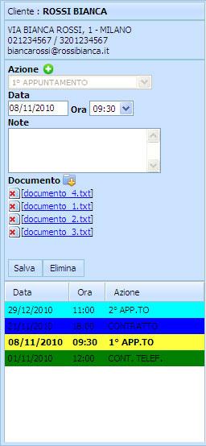
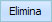

Le Azioni possono essere cancellate solo da un Utente Amministratore.

Per eliminare una Azione bisogna cliccare sulla riga che contiene l'Azione.
La scritta in grassetto indica l'Azione che viene visionata.
Cliccare sul tasto 
e l'Azione verrà rimossa.